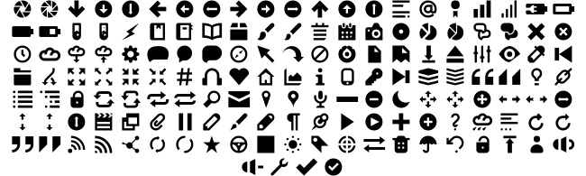

jIconFont
jIconFont is a API to provide icons generated from any IconFont. These icons can be used in Java GUI toolkits, such as Swing and JavaFX.
IconFonts are versatile and light-weight.
Any icon size

Any icon color

Choose the appropriate API for the Java GUI toolkit used by you
Choose any IconFont you wish
Ready to use Icons
Elusive
Entypo

Font Awesome

Google Material Design Icons

Open Iconic

License
jIconFont is distributed under the terms of the MIT license.
private String a = null;
public void aa(String dada){
if(a==null){
jqwojewqo jewqojewqowqj owjewoqejoqw ejwq eowqj eoqwjowq jewqoejwqoewqjo eqwjeowqjeqwoej qwo jeqwo jeqwo jqwo jewqo ejwqowq
}
}